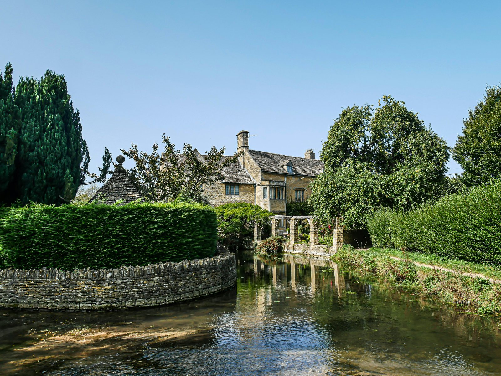
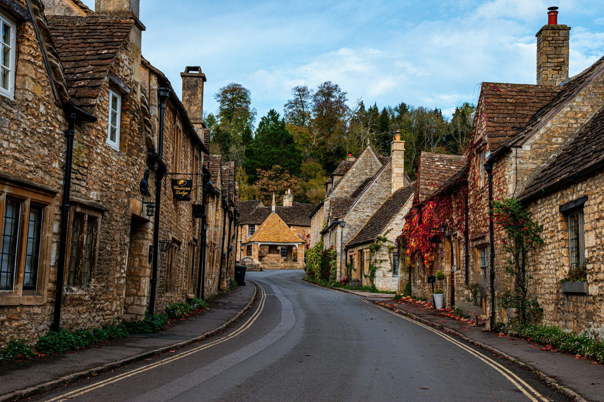

With historic sites, luxury hotels and scenic natural areas to explore, the Cotswolds are a famous destination. But why is this part of England witnessing such a huge influx of American buyers?
The exchange rate is one reason. The sterling has been relatively friendly for holders of the US dollar since the 2022 mini-budget crisis. Even with the recent stabilization, the pound is meaningfully weaker against the dollar than it was a decade ago. A Cotswolds home priced at £3 million delivers more value in many respects than an estate in the Hamptons. There, a comparable property equates to a smaller lot size, less square footage, and none of the history.
The second is the Soho House effect, which is shorthand for the cluster of private members' clubs and luxury hospitality properties that anchor the region. Soho Farmhouse opened in 2015 and has effectively functioned as the social engine of the southern Cotswolds ever since. For those who care what celebrities are doing, Meghan Markle held her bridal shower there. Estelle Manor, an opulent club-hotel that opened in May 2023, has drawn its own roster including, by reputation, Kim Kardashian and Demi Moore.
Pictures of the Lygon Arms Spa are certain to get the imagination going.

Restoration Hardware opened its first prime UK location at the 73-acre Aynho Park estate in June 2023, with Idris Elba DJing the opening party. This is meaningless to me, but other people seem to care about it, so my opinion is irrelevant. Where the cultural anchors go, the real estate buyers follow. The Hamptons trajectory in the 1980s is a reasonable analog.
The third is political mood. American buyers consistently describe the Cotswolds as a hedge, a softer landing spot than London for families considering a partial relocation, and a place where their children can attend schools like the Dragon, St. Edward's, Cheltenham Ladies' College, or the country prep schools that ring Oxford. The decision is not always strictly based on the value of the investment. The lifestyle is the determining factor, the investment thesis is confirmation.
The Appeal of the Cotswolds
People love the Cotswolds for the chance to get away from it all. Drive two hours northwest of London by car and suddenly the houses transform into a buttery yellow limestone that turns gold in the late afternoon. The villages have names like Stow-on-the-Wold and Bourton-on-the-Water. The Cotswolds have looked roughly the way they look now for somewhere between four and six hundred years, depending on which manor is currently in view.
The architecture is protected and even the hedgerows are listed. The number of homes that come to market in a given year is a fraction of what an American buyer would consider normal in a comparable US market, and this rarity, of course, adds to the investment value.
Understanding why the Cotswolds look the way they do takes a little history. The region got rich on wool. From the medieval period through the seventeenth century, sheep on these hills produced fleeces that built the manor houses, the wool churches, and the market towns that anchor the area today. When the Industrial Revolution shifted England toward cotton, the wool money dried up and the region effectively went to sleep. Sparse rail and highway access kept it asleep. The villages preserved themselves through neglect, and that long economic backwater is exactly why the region now reads to a visitor as a place that time forgot. The dilapidation of the eighteenth and nineteenth centuries is the architectural inheritance of the twenty-first.

The Villages
The northern Cotswolds anchor most visitor itineraries. Chipping Campden was once home to the wealthiest of the wool merchants, and its high street is wide enough to remember the era when sheep and packhorses laden with fleece would clog the road on market days. The seventeenth-century Market Hall in the center of town stands as a small monument to how much money this region used to move. Stow-on-the-Wold, whose name translates roughly as meeting place on the uplands, sits ten miles south and is the highest point in the Cotswolds. Most of its day-trippers leave by sundown, which makes nights pleasant. The town square is ringed with antique shops, pubs, and the original public stocks, which were once used for actual punishment and are now used for actual photographs.
Inside Stow's parish church, the floor is paved with the tombs of the same wool merchants whose money built the village. Two enormous yew trees flank the rear door, and Lord of the Rings fans have argued for decades that Tolkien used them as the visual model for the Doors of Durin into Moria. Whether or not that's true, the trees are roughly a thousand years old and they look the part.
Castles, Palaces, and Country Houses
If the Cotswolds have a single must-see, it is Blenheim Palace, the only non-royal residence in England formally classified as a palace. Built between 1705 and 1722 as a gift from a grateful monarch to the first Duke of Marlborough, Blenheim is also the birthplace of Winston Churchill. The Capability Brown landscape alone is worth a half-day, and the palace itself runs guided tours, evening events, and a steady calendar of exhibitions throughout the year.
Sudeley Castle, outside Winchcombe, has the dramatic distinction of being the burial site of Katherine Parr, the last and longest-surviving of Henry VIII's six wives. The gardens are widely considered among the finest in England. Berkeley Castle was built in 1153 and has been continuously occupied by the same family for twenty-seven generations.
Highgrove Gardens is the private residence of King Charles III and Queen Camilla. Tours run seasonally and book out months in advance. Broadway Tower, the highest little castle in the Cotswolds, was designed in 1798 as a folly for Lady Coventry and on a clear day affords views into sixteen counties. Hidcote, the Arts and Crafts garden run by the National Trust, is the most photographed garden in England for a reason.
Where to Stay
The hotel offerings in the Cotswolds are unusually deep for a region of its size. The Lygon Arms in Broadway has been operating as a coaching inn since the fourteenth century and has hosted Oliver Cromwell, King Charles I, and most recently a steady rotation of London weekenders. Calcot Manor near Tetbury is the family-friendly luxury option, with a serious spa and a children's program that lets adults pretend they are not parents for a long weekend. Thunderbird Lodge is the newer entry, opened by the team behind Soho House. Estelle Manor, mentioned earlier, is the destination for guests who want their hotel to feel like a movie set. Soho Farmhouse remains members-only, which is its own form of marketing.
Food, Drink, and the Long Walk
The Cotswolds Distillery runs daily tours and tastings, with single malt whisky and gin both produced on site. Hook Norton Brewery is one of only thirty-two family-owned breweries left in Britain and operates out of a working Victorian tower brewery that has not changed in more than a hundred years. The Woodchester Valley Vineyard demonstrates that English sparkling wine has gotten genuinely good, a sentence I never expected to write.
The single best activity in the Cotswolds (like it is in many other areas) is the one that costs nothing. The five-mile walk from Stow-on-the-Wold through Lower Slaughter and on to Bourton-on-the-Water is the canonical Cotswolds hike. This is the pastoral English countryside that makes it easy to grasp why Beatrix Potter fans want to retire there. The Cotswold Farm Park, a working farm that preserves rare British breeds including the original Cotswold Lion sheep that built the region's wool fortunes, is a legitimate stop for visitors of any age.
What it Actually Costs to be an American Buyer
The headline price is the smallest part of the bill. The UK levies stamp duty land tax on a graduated scale, up to 12 percent of the purchase price. Non-residents pay an additional two percent surcharge. Second homes and investment properties carry a further three percent surcharge. For a property priced at £2 million, non-resident and second-home surcharges can add up to 100,000 pounds faster than a buyer can say, "The British are coming!"
Mortgages for non-resident American buyers exist, but the field is narrow. High Street UK banks generally prefer UK residents with UK income. The lenders who actively work with American buyers are private banks, international divisions of major banks, and a handful of specialist lenders. Expect a deposit of 25 to 40 percent rather than the 5 to 20 percent a UK resident might secure. Currency hedging, US tax treatment of UK real estate, and UK inheritance tax exposure all need to be planned for before the offer goes in, not after.
What the Data Actually Shows
Savills reports that international buyers accounted for just over 21 percent of all Cotswolds sales above 1.5 million pounds in 2025, up from a five-year average of 12 percent. North Americans alone made up 13 percent of those sales, a figure that was 3.5 percent five years ago. The Buying Solution, an agency that sources country homes for ultra-high-net-worth clients, reports a 50 percent year-over-year rise in American clients searching the Cotswolds. Middleton Advisors and Knight Frank have published similar numbers.
The Cotswolds golden triangle, in agent parlance, is a narrow band between Kingham, Broadwell, and the Oddingtons. Property prices in that triangle ran up roughly 30 percent in 2024 alone. Villages near Soho Farmhouse, including Great Tew and Sandford St Martin, are now classified by agents as super-prime, a designation usually reserved for parts of Mayfair and Knightsbridge.
An analysis by Enness Global and the property brokerage Jefferies London of Land Registry titles registered to U.S. correspondence addresses identified 37 million pounds of homes in the Cotswold district council area alone, with an additional 46.2 million in Wiltshire, 20.7 million in West Oxfordshire, and 13.8 million in Cheltenham. That tally is almost certainly low. A meaningful number of American buyers register through trusts, offshore corporate structures, or U.K.-domiciled solicitors, none of which show up in a U.S.-address title search.
The Supply Problem
Inventory is the real constraint. There are perhaps 2,000 luxury properties priced above £2 million across the entire Cotswolds region. A meaningful share of those are owned by absentee investors who do not list publicly. Strict planning laws limit new construction. Conservation Area designations and listed building status prevent the kind of teardown-and-rebuild activity that defines high-end US markets. The result is a market where seven to ten bidders per high-end listing is normal, where buying agents are essentially required, and where the agent network is as much about access to off-market deals as it is about price negotiation.
Is it Too Late?
The northern Cotswolds, around Kingham and Chipping Norton, is where most American buyers begin their search and where the price compression has been steepest. The southern Cotswolds, around Tetbury and Cirencester, has more available stock, lower price-per-square-foot, and proximity to Bath. Wiltshire villages around Castle Combe, Lacock, and Malmesbury have absorbed more American capital than most of the marketing materials acknowledge. The Stroud valleys, which are quieter and less polished, are the contrarian play.
The Hamptons reached a price ceiling somewhere around 2014 that has held with periodic interruptions ever since. The Cotswolds are not at a comparable ceiling, however, the area has started behaving like a market that knows it is being repriced. American buyers should expect to pay top of cycle, plan to hold for at least a decade, and understand that the asset class they are buying is something to be enjoyed and appreciated. The architectural provenance, the planning protections, and the limited supply make this a holding play instead of something to be flipped. That is, of course, a selling point for the right buyer.
The view from Stow-on-the-Wold has not changed since Cromwell's troops marched through. What's shifted is the buyer demographic, and it will be interesting to see if the trend continues.
Header image and supplementary photography sourced from Unsplash, royalty-free. Reporting context drawn in part from Rick Steves' Europe and the Cotswolds Tourism Partnership.